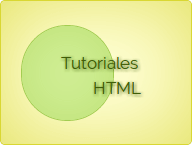

<body>
    <!-- Marqeusina basica-->
    <marquee>Marquesina de ejemplo</marquee>
    <!-- Marquesina basica con color y sombra-->
    <marquee style="color: blue; text-shadow: 5px 5px 5px purple;">Hola, esto es una prueba de marquee</marquee>
    <!-- Marqeusina basica hacia la derecha-->
    <marquee direction="right">Hola, esto es una prueba de marquee hacia la derecha</marquee>
    <!-- Marqeusina basica hacia arriba-->
    <marquee direction="up">Hola,<br> esto es una prueba de marquee<br> hacia<br> arriba</marquee>
    <!-- Marqeusina basica hacia arriba-->
    <marquee direction="down">Hola,<br> esto es una prueba de marquee<br> hacia<br> abajo</marquee>

    <!-- Marqeusina cambiando la velocidad con scrolldelay-->
    <marquee scrolldelay="10">Voy a una velocidad de 10</marquee>
    <marquee scrolldelay="100">Voy a una velocidad de 100</marquee>
    <marquee scrolldelay="200">Voy a una velocidad de 200</marquee>

    <!-- Marqeusina cambiando la velocidad con scrollamount en este caso es la aceleraccion en milisegundos-->
    <marquee scrollamount="10">Voy a una velocidad de 10</marquee>
    <marquee scrollamount="100">Voy a una velocidad de 15</marquee>
    <marquee scrollamount="200">Voy a una velocidad de 20</marquee>

    <!-- Marqeusina basica con LOOP numero de veces que se repite-->
    <marquee loop="3"><h1>Marquesina de ejemplo que solo se repite 3 veces</h1></marquee>

  <!-- Marqeusina basica de ida y vuelta-->
    <marquee behavior="alternate"><h2>Marquesina behavior alternate</h2></marquee>

 <!-- Marqeusina basica de ida y vuelta-->
 <marquee behavior="alternate"></marquee>

</body>